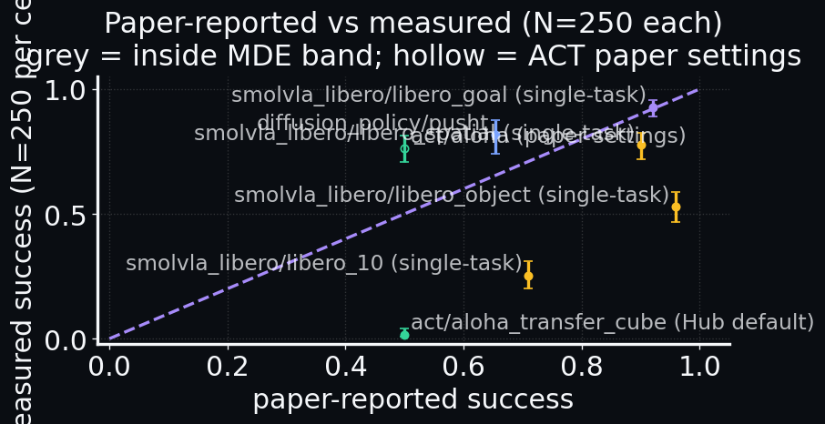

A reproducible benchmark of 5 pretrained robot policies × 6 simulated environments.
5,250 episodes. 25 hours. Every per-episode result open.
Click any thumbnail · O overview · ←→ navigate · P autoplay · F fullscreen · Esc back to overview.
We meet the 4 learned policies in scope, look at their tradeoffs side-by-side, then cover the 2 baselines that anchor every comparison and the 6 simulated environments they run on. If you already work on robot learning, jump straight to the question.
5 prelude slides → 22 talk slides → 2 supplementarypress space or → to advance
lerobot-bench · prelude
C2/C5
the learned policies (4)
Four pretrained models. Different ideas, same job.
actaction chunking transformer · zhao et al. 2023
imitation
Watches two camera feeds + joint angles, predicts chunks of the next k joint commands at once. Smoother than 1-step regressors.
~80 M params2 cams + proprioaloha sim demos
diffusion_policyconditional action diffusion · chi et al. 2023
imitation
Treats an action trajectory as a noisy signal and denoises it conditioned on recent frames. Multi-modal-friendly; slower at inference (T denoise steps).
~250 M params3-frame stackpusht 2-D demos
smolvla_liberovision-language-action · hf 2024
VLA · fine-tuned
Reads a natural-language goal together with the pixel observation; outputs action chunks. Pretrained at internet scale, fine-tuned per LIBERO suite.
~450 M paramsimage + textlibero × 4 fine-tunes
xvla_liberolarger VLA · fine-tuned on LIBERO
deferred to v1.1
Same family as SmolVLA, ~6× bigger. Deferred from v1 — two patched Hub-processor bugs, one unresolved (chunked-action layout). See slide 13.
~3 B paramsimage + textupstream #3674
checkpoints pinned to Hub SHAs · MODEL_CARDS.mdconfigs/policies.yaml
lerobot-bench · prelude
C3/C5
the tradeoffs
How the four policies trade off.
Each row is a design dimension. Each column is a policy. The patterns matter more than any one number.
dimension
act2023 · imitation
diffusion_policy2023 · diffusion
smolvla_libero2024 · VLA · fine-tuned
xvla_libero2024 · deferred v1.1
params
~80 M
~250 M
~450 M
~3 B
input modality
2 cameras + proprio
3-frame image stack
image + text
image + text
inference cost
low
medium
medium
high
training data
aloha sim teleop demos
pusht 2-D demos
internet pretrain + libero FT
internet pretrain + libero FT
best cell here
0.016aloha
0.816pusht
0.928libero_goal
—deferred
spread across envs
n/a (1 env)
n/a (1 env)
0.252 → 0.928huge variance
n/a
one-line takeaway
does not beat random on aloha
reproduces the paper
language-conditioned · suite-dependent
upstream wiring bugs · slide 13
Adding a new policy? Drop a column here, copy a card to slide C2, compose primitives from <defs> — see docs/POLICY_DIAGRAM_GUIDE.md.
configs/policies.yaml · MODEL_CARDS.md · matches slide 04 matrixv1.1 will fill the deferred column
lerobot-bench · prelude
C4/C5
the two baselines
Floors are not optional.
Before believing "a policy learned the task", we need to know what a non-policy would score. Two trivial baselines run on every env.
no_opbaseline · 0 params
Returns the identity action every step — joints stay still, gripper does nothing.
▸ catches envs that auto-complete or reward inaction
randombaseline · 0 params
Samples actions uniformly from the env's action space every step.
▸ catches envs that reward any contact event (slide 11: aloha is one)
A learned policy that doesn't beat these floors is not actually learning the task — it's exploiting the env.
src/lerobot_bench/policies.pyno_op + random = 12 of 22 runnable cells (2 baselines × 6 envs)
lerobot-bench · prelude
C5/C5
the environments (6 simulated)
Every preview is a real successful episode.
pusht2-D · diffusion policy
Push a T-shape onto a target zone. Top-down view. From the Diffusion Policy paper. Success = T pose within tolerance.
aloha_transfer_cubebimanual · ACT
Two 6-DOF arms transfer a cube between grippers. From the ALOHA paper. Success = cube held by the receiver gripper.
libero_spatial7-DOF · libero
Single-arm tabletop. Tasks emphasizing spatial reasoning (which side, which slot). We run task_id = 0.
libero_object7-DOF · libero
Single-arm tabletop. Object-centric pick-and-place. Same hardware, scripted scene variation per episode.
libero_goal7-DOF · libero
Single-arm tabletop. Goal-conditioned manipulation — different target every episode. Where SmolVLA's gap is smallest.
libero_107-DOF · libero · long horizon
LIBERO's 10 long-horizon tasks. Multi-step plans, long episodes. The benchmark stress test — where the SmolVLA gap is widest.
all clips: real rollouts from results/sweep-full/videos · 256 × 256 px renders · MuJoCosrc/lerobot_bench/envs.py
the question
Does pretrained robot software actually work?
lerobot-bench · v1.0.020 talk slides · background is moving
lerobot-bench
02/22
the premise
Pretrained robot software under default Hub configs.
Five pretrained checkpoints, each shipped with a paper number. We re-ran each one 250 times on the lerobot eval defaults. Some replicate. Some don't. All four smolvla rows compare a single task vs the paper's 10-task suite average — see slides 07 + 08 before drawing conclusions.
policy × env
paper said
we measured
Δ ⚠
smolvla · libero_10 ⚠
0.71 (10-task avg)
0.252 (task 0)
−45.8 pp*
smolvla · libero_object ⚠
0.96 (10-task avg)
0.528 (task 0)
−43.2 pp*
smolvla · libero_spatial ⚠
0.90 (10-task avg)
0.776 (task 0)
−12.4 pp*
smolvla · libero_goal ⚠
0.92 (10-task avg)
0.928 (task 0)
+0.8 pp*
act · aloha_transfer_cube ⚠
0.50 (human teleop)
0.016 (Hub default) → 0.764(paper settings**)
−48 pp +26 pp**
diffusion_policy · pusht
0.83
0.816
−1.4 pp
* smolvla scope · ** act default vs paper inference (temporal_ensemble_coeff=0.01, n_action_steps=1) — v1.0.2 proberesults.parquet · PROBE_RESULTS_V1.0.1.md
lerobot-bench
03/22
first, the basics
A policy is a function. Pixels in. Motor commands out.
camera frames
image · proprioception
→
policy
100 M – 3 B params
→
joint torques
action chunk · ∈ ℝⁿ
Train it on demonstration videos. Ship the weights to Hugging Face. Anyone downloads and runs it. — or so the story goes.
Sparse by design. Each filled cell exists only where a public Hub checkpoint exists for that policy × env pair.
⚠ Coverage is skewed toward SmolVLA (4 of the 6 non-baseline cells) because LIBERO publishes 4 per-suite fine-tunes. ACT and Diffusion Policy each have only one home env.
22 runnable cells. 107 dispatched (each baseline splits per env). 0 failures over 25 hours.
A single rollout tells you nothing. That's why every cell in this benchmark is N=250.
same lerobot/smolvla_libero @ Hub revisionvideos/smolvla_libero__*.mp4
lerobot-bench
06/22
smolvla on libero-10 · single task_id=0 · careful read
paper · 10-task suite avg
0.71
→
ours · task 0 only
0.252
⚠ Two compounding caveats. The 0.252 is (a) a single task vs the paper's 10-task average (audit PR #84), and (b) truncated at 520 steps while the canonical LIBERO protocol allows 600 — and 74.8% of our episodes hit the cap (audit PR #89).
The number is statistically tight (Wilson 95% CI [.202, .309], MDE 12.3 pp) but is a lower bound on this checkpoint's true single-task success rate. Not a paper-replication gap until v1.1 fixes both.
N=250 · 5 seeds × 50 ep · audits #84 (scope) + #89 (step cap) both confirmedpaper §4 · see slide 08
Three confirmed mismatches — and what they do to the headline.
!
PR #84 · task coverage — scope mismatch
SmolVLA paper §4.1: 10 tasks × 10 trials per task = 100-ep suite averages. We ran task 0 × 5 seeds × 50 ep = 250 single-task episodes.
The two scalars measure different quantities. The "0.71 → 0.252" headline is a single-task probe, not a paper-replication number — until v1.1 runs all 10 tasks. Full verdict: docs/CLAIM_AUDIT_SMOLVLA.md.
Hub ships temporal_ensemble_coeff=None, n_action_steps=100; Zhao 2023 Table I used coeff=0.01, n=1.
Probe at paper settings: 0.764 [0.708, 0.812] vs v1.0.0 default 0.016 — Wilson CIs disjoint by an order of magnitude. The 0.016 was Hub-default inference; the architecture clears paper on this env at correct settings. (See PROBE_RESULTS_V1.0.1.md.)
!
PR #89 · success criterion + step cap — under-count
LIBERO max_steps={280, 280, 300, 520} vs canonical 600. PushT + Aloha success rules also non-canonical.
74.8% of smolvla × libero_10 episodes hit our 520-step cap → the 0.252 is a lower bound. Aloha accepts reward ∈ {1..4} vs ACT paper's reward == 4. v1.1 adopts canonical (PR #90 lands selectable rules).
Net for the headline: smolvla × libero_10 sits under two compounding caveats (scope + truncation); ACT × aloha caveat RESOLVED — 0.016 → 0.764 at paper settings (v1.0.2 probe). External replication + cross-hardware variance: see slide 18 limitations.
solid bars = task_id=0 only · dashes = paper · 10-task suite avg (PR #84 mismatch) · error bars = Wilson 95%notebooks/01-write-finding.ipynb
lerobot-bench
10/22
classical heads on their home env
One reproduces. The other does not.
0.816
diffusion_policy · pusht · 95% CI [.74, .87]
0.016⚠
act · aloha_transfer_cube · 95% CI [.01, .04]
Diffusion Policy on PushT reproduces. ⚠ ACT's 0.016 likely reflects missing temporal ensembling (PR #86 audit) — pending a 1-seed probe with paper settings before we restate it.
On Aloha transfer-cube, uniform-random actions succeed 13 / 250 times.
Wilson upper bound: 8.7%.
The success threshold rewards any contact event.
A policy needs to beat this number to claim it learned the task.
ACT scores 1.6% on the same cell — at our default inference settings. ✓ v1.0.2 probe at paper inference settings (coeff=0.01, n=1): 76.4% [70.8%, 81.2%]. The Hub-default reading was missing temporal ensembling; the architecture clears random-baseline by ~67 pp at correct settings.
The LeRobot team built the policies and the env wrappers. Hugging Face hosts the leaderboard for free. Diffusion Policy, ACT, SmolVLA, X-VLA authors shipped pretrained checkpoints. Anthropic shipped the agent harness that made a one-person sweep tractable.
None of this exists without them. The contribution here is the protocol — the connective tissue that lets you trust a row in the table.
issues + PRs welcomeCONTRIBUTING.md
lerobot-bench
22/22
takeaway
The benchmark is the data.
The protocol is the contribution.
thank you · questions?github.com/thrmnn/lerobot-bench · v1.0.0
lerobot-bench · supplementary
S1/S2
supplementary · for the technically curious
Paper-reported vs measured. One picture.

Above the diagonal = beat the paper. Below = missed it. Grey = inside the MDE band (agrees with paper); the hollow point is ACT at paper inference settings (the v1.0.2 probe). All caveats from slide 08 apply.
Re-run the protocol on physical Koch and SO-100 arms. Sparser matrix, same statistics. The reproducibility story should survive the embodiment gap.
real hardwarecross-embodimentnoise model
all-tasks LIBERO + new envscoverage
v1.1 / v1.2
10× LIBERO tasks per suite first. Then add aloha_insertion, robomimic, MetaWorld pick-place. Multi-comparison correction across the wider grid.
~10× cellstask heatmapholm correction
scaling lawsparams × data × success
v1.2
Plot measured success vs parameter count vs training-data size. Does the VLA replication gap narrow at scale, or widen? Pi-family unlocks the high-end data point.
4-bit GPTQπ₀ · π₀.₅log-log
online learningclose the replication gap
v1.3+
Use the deterministic-ceiling baseline as a critic. Fine-tune VLAs with small-batch RL until they beat their paper number. Closing the gap is the obvious next contribution.
PPO / SACcheap fine-tunefair-comparison protocol
full plan: docs/PIPELINE_ROADMAP.md · discuss in GitHub DiscussionsPRs welcome